Material selections and approval
In the office app, press Help and type material selections and approval
: the tour plays on your own screen, with your own data.
-
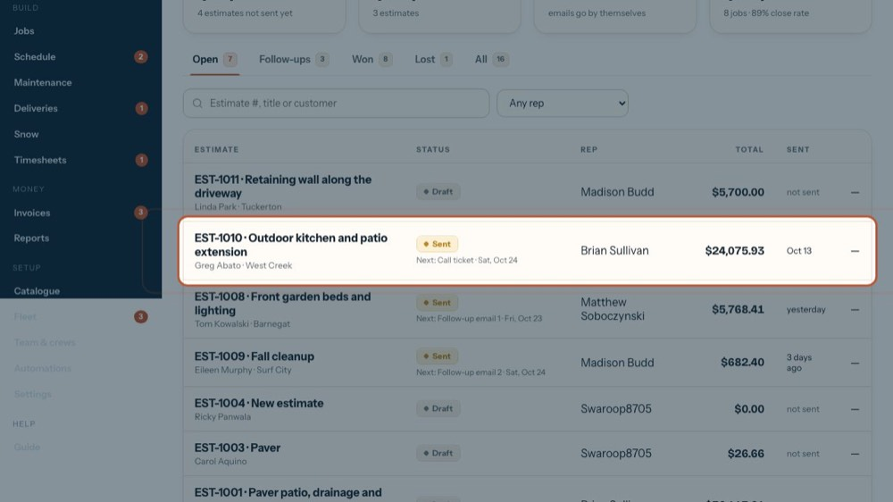
1Open the estimate
Selections are kept on the estimate. The tour opens one that has some.
-
2
Material selections
The customer's picks at the supplier (the Cedar Bridge form). Anyone working on the estimate can fill them in.
-
3
The picks, group by group
Pavers, Walls & steps, Stone, edging & extras, and Upgrades. Empty groups are left out.
-
4
The customer's approval
Waiting on the customer until they approve. If the picks change after that, they go back for a new approval.
-
5
Record their approval
Opens a short form for when they approve. The tour opens it to show you.
-
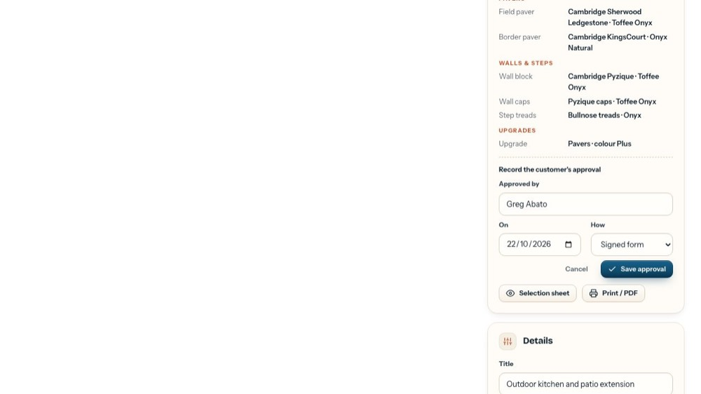
6Who approved
Their name, filled in with the customer's.
-
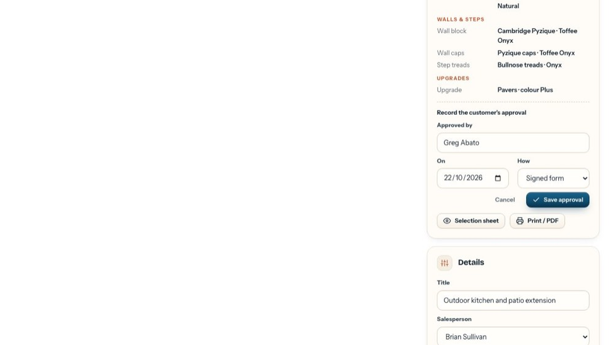
7When and how
The date, and how: signed form, email, in person, by phone or online.
-
8
Save approval
Keeps it; the card then shows Approved, by whom and how, with Undo. The tour doesn't save.
-
9
Cancel
Closes the form without saving.
-
10
The selection sheet
The selection form in your letterhead, for the customer to check and sign. The tour opens it.
-
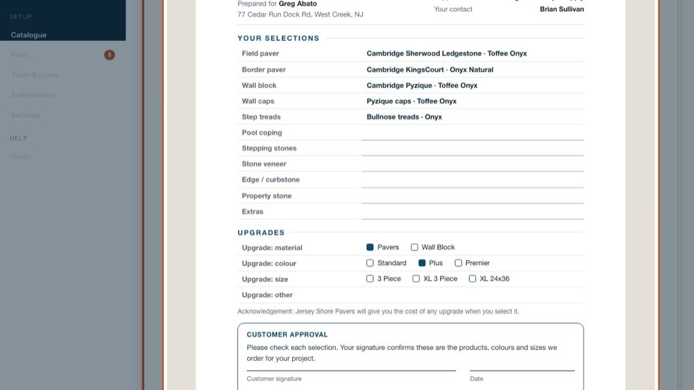
11Check it
Every pick, laid out like the supplier's form. Print / PDF prints it or saves a PDF to email.
-
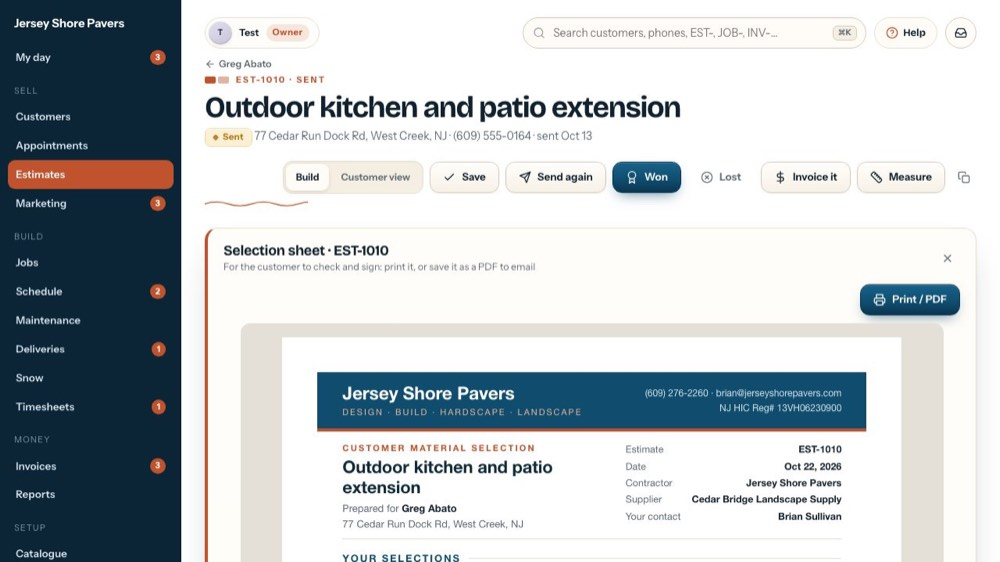
12Close it
The x closes the sheet.
-
13
Edit the picks
Edit (Add selections when there are none) opens the whole form above the estimate.
-
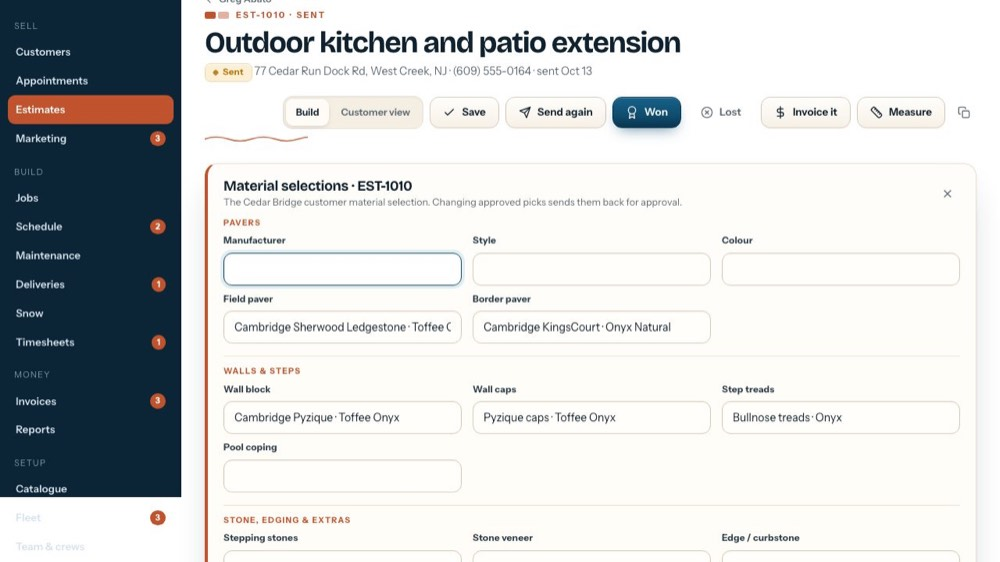
14Pavers
Manufacturer, style, colour, the field paver and the border paver.
-
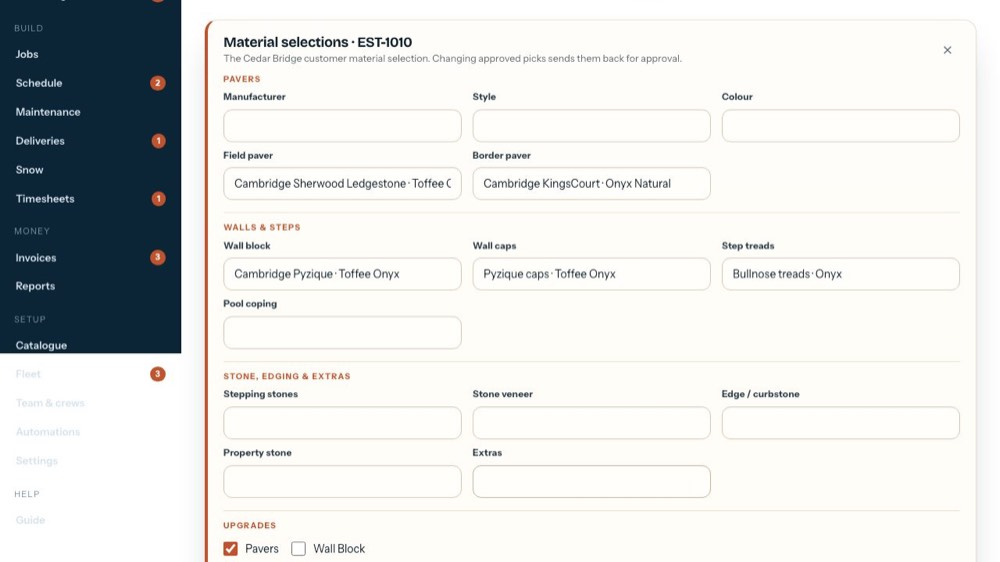
15Walls and steps
Wall block, wall caps, step treads and pool coping.
-
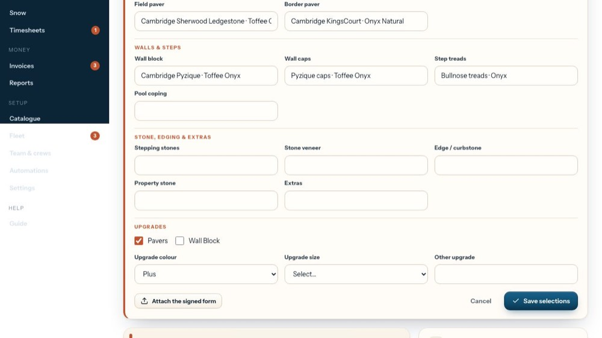
16Stone, edging and extras
Stepping stones, stone veneer, edge / curbstone, property stone and any extras.
-
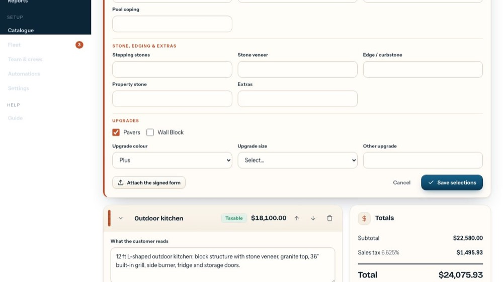
17Upgrades
Paver or wall block upgrades, the upgrade colour (Standard, Plus, Premier) and size, or any other upgrade.
-
18
Attach the signed form
Upload the customer's signed sheet; it's kept with the selections when you save.
-
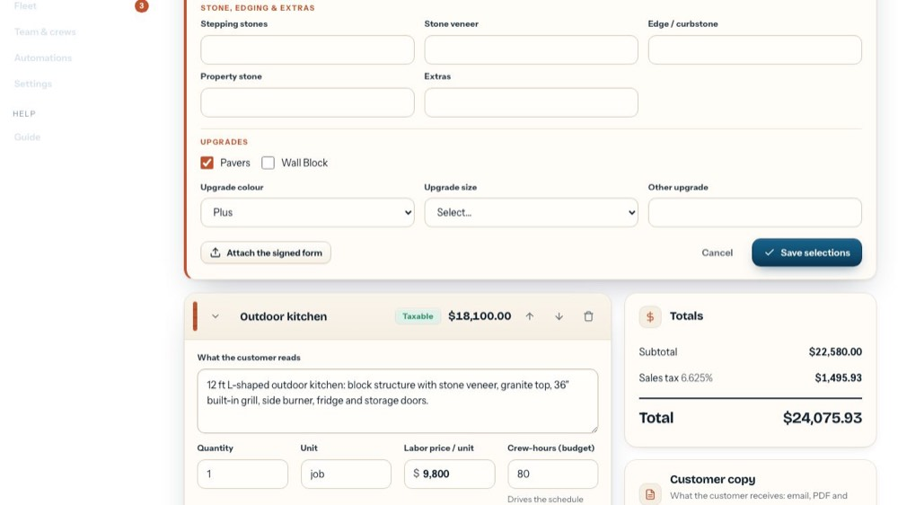
19Save selections
Keeps the picks on the estimate, the proposal and the work order. The tour doesn't save.
-
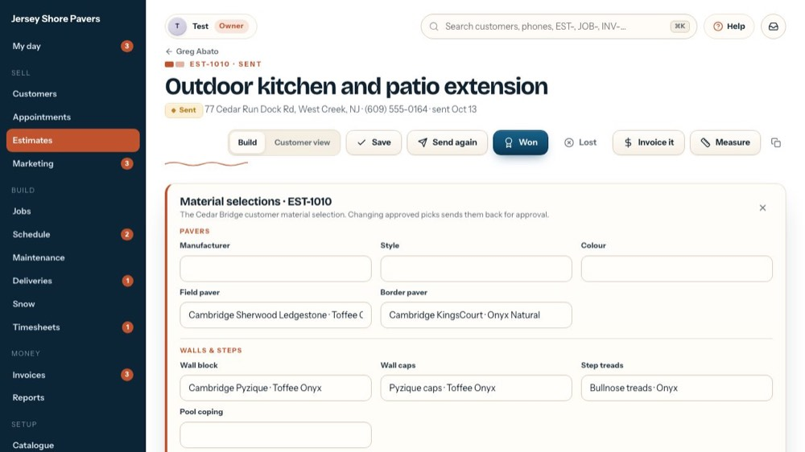
20Close the form
The x (or Cancel) closes it without saving.